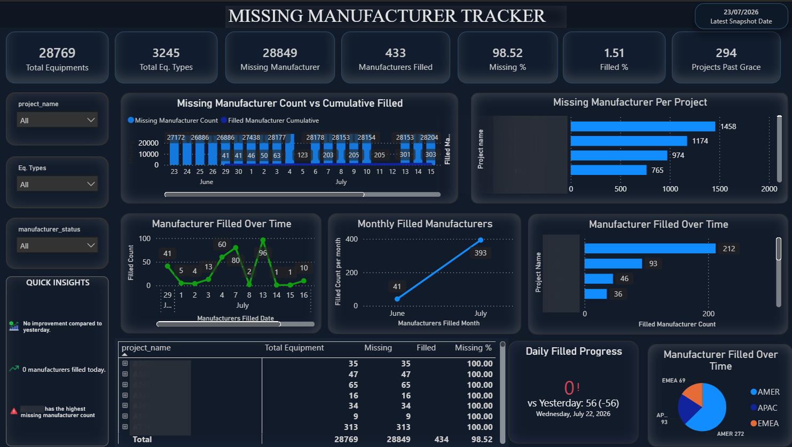
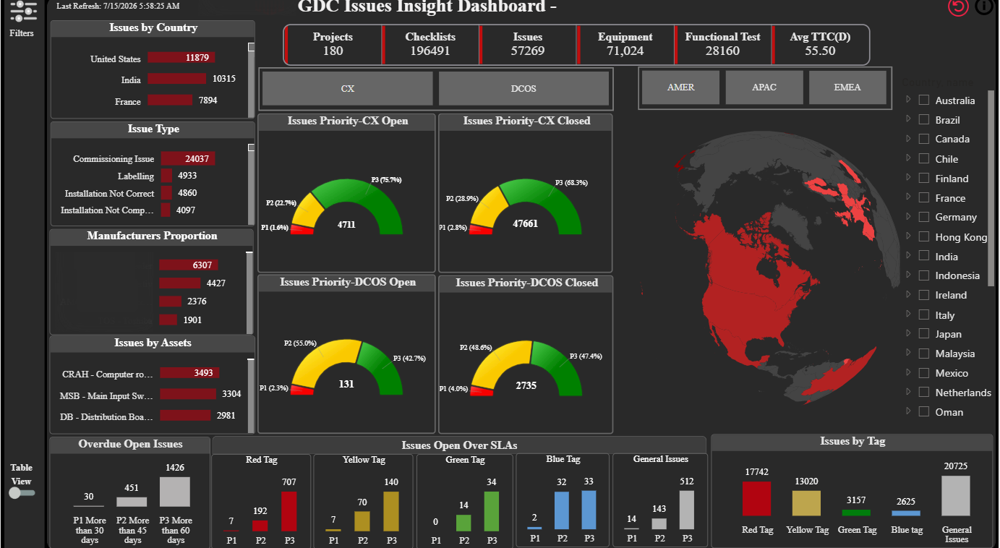
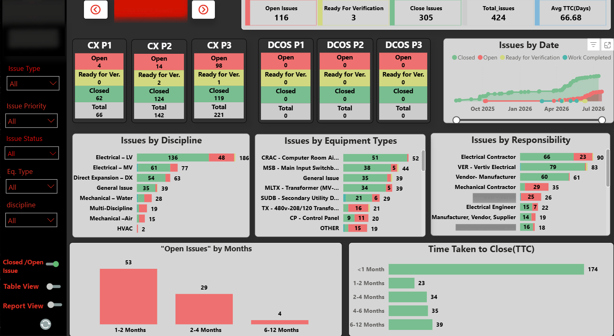
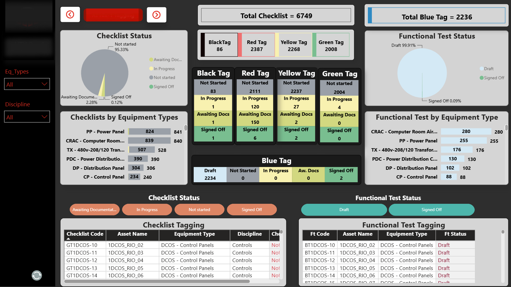
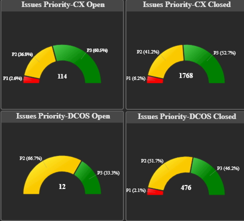
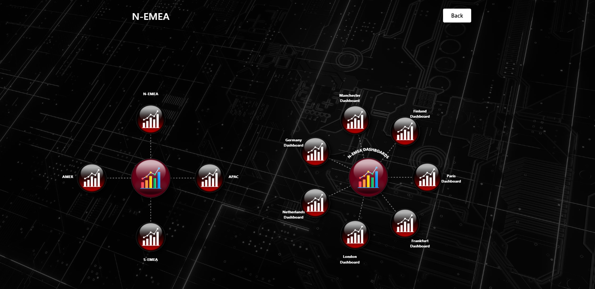
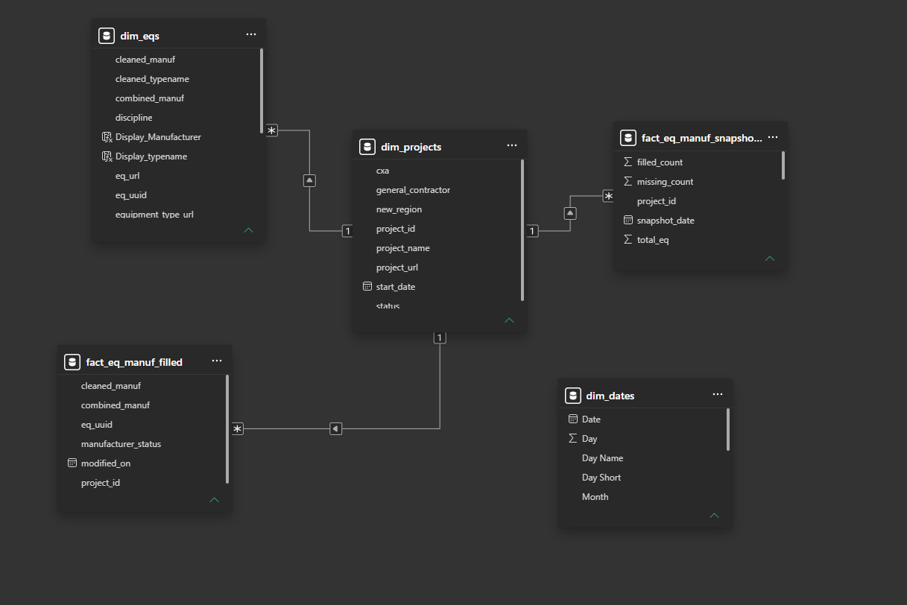

I build BI dashboards, data pipelines, and automation that help teams trust their numbers — and act on them faster.

I'm a Data Analyst with 3+ years of experience combining business intelligence and software engineering to deliver scalable analytics solutions. I work across the full pipeline — from pulling raw data out of APIs and flat files, to shaping it into clean lakehouse architectures, to building dashboards people actually rely on.
I'm most energized by root-cause work: tracing a messy number back to the process that produced it, then fixing the process — not just the report.
A selection of dashboards, tools, and designs I've built.

A global-scale rollup tracking commissioning issues across 180+ projects and 71K+ pieces of equipment, with an interactive map, SLA breakdowns, and priority gauges by region.

Operational dashboard breaking down open vs. closed issues by discipline, equipment type, and responsible party, with time-to-close trend analysis across project phases.

Tracks commissioning checklist completion and functional test sign-off across thousands of assets, using a color-tag system (Black/Red/Yellow/Green/Blue) to flag status at a glance.
Tracks data-completeness gaps across 28K+ equipment records, monitoring fill-rate progress over time and surfacing which projects need attention.

Designed and built a custom priority-gauge visual from scratch using the Power BI Visuals SDK (pbiviz), used across multiple dashboards for a consistent, at-a-glance priority view.

Designed a navigation hub in SharePoint linking regional dashboards (AMER, APAC, N-EMEA, S-EMEA) into a single, easy-to-browse portal for cross-tenant reporting access.

Modeled fact and dimension tables (equipment, projects, dates, manufacturer snapshots) into a clean star schema for fast, reliable Power BI reporting.